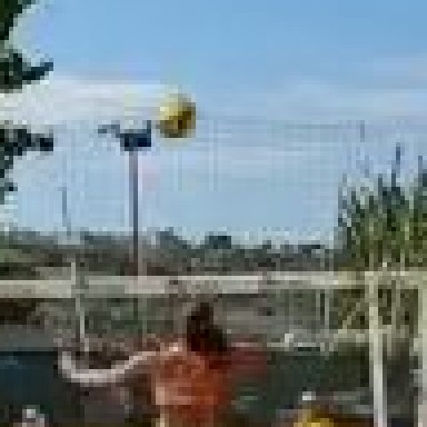

<!DOCTYPE html>
<html lang="it">
<head>
  <meta charset="UTF-8">
  <meta name="viewport" content="width=device-width, initial-scale=1.0">
  <title>Atto 1 — Il punto di partenza</title>
  <link rel="preconnect" href="https://fonts.googleapis.com">
  <link rel="preconnect" href="https://fonts.gstatic.com" crossorigin>
  <link href="https://fonts.googleapis.com/css2?family=Montserrat:wght@600;700;800;900&family=Inter:wght@400;500;600;700&display=swap" rel="stylesheet">
  <script src="https://unpkg.com/react@18.3.1/umd/react.production.min.js"></script>
  <script src="https://unpkg.com/react-dom@18.3.1/umd/react-dom.production.min.js"></script>
  <script src="https://unpkg.com/@babel/standalone@7.26.10/babel.min.js"></script>
  <script>Babel.registerPreset('classic', { presets: [[Babel.availablePresets.react, { runtime: 'classic' }]] });</script>
  <style>
    :root {
      --bg: #0e1728;
      --bg-card: #16233c;
      --bg-light: #1E2E52;
      --border: #2a3a5c;
      --text: #f3f5f9;
      --text-dim: #c9d2e0;
      --text-muted: #93a0b6;
      --coral: #EF5540;
      --sun: #F6A93B;
      --teal: #1FA9A0;
      --sand: #E7C58C;
      --navy: #1E2E52;
      --success: #1FA9A0;
      --danger: #EF5540;
      --warn: #F6A93B;
      --info: #4e93b8;
      --purple: #a879c4;
      --fs-xs: clamp(13px, 0.7vw + 11px, 14px);
      --fs-sm: clamp(15px, 0.8vw + 12px, 16px);
      --fs-body: clamp(17px, 1vw + 13px, 19px);
      --fs-lead: clamp(19px, 1.3vw + 14px, 22px);
      --fs-h3: clamp(20px, 1.6vw + 14px, 26px);
      --fs-h2: clamp(26px, 2.4vw + 16px, 36px);
      --fs-h1: clamp(34px, 5vw + 18px, 58px);
      --fs-display: clamp(44px, 7vw + 20px, 84px);
      --lh-body: 1.65;
      --lh-heading: 1.18;
    }
    * { margin: 0; padding: 0; box-sizing: border-box; }
    body { background: var(--bg); color: var(--text); font-family: 'Inter', sans-serif; }
    #root { min-height: 100vh; position: relative; }
    a { color: inherit; }
    h1 { font-family: 'Montserrat', sans-serif; line-height: var(--lh-heading); }
    h2, h3 { font-family: 'Montserrat', sans-serif; line-height: var(--lh-heading); font-weight: 700; }
    h2 { font-size: var(--fs-h2); }
    h3 { font-size: var(--fs-h3); }
    p, li { line-height: var(--lh-body); }
    button { font-family: 'Inter', sans-serif; }
    .bg-texture {
      position: fixed; inset: 0; pointer-events: none; z-index: 0;
      opacity: 0.05;
      background-image: url("data:image/svg+xml,%3Csvg xmlns='http://www.w3.org/2000/svg' width='120' height='120'%3E%3Cfilter id='n'%3E%3CfeTurbulence type='fractalNoise' baseFrequency='0.9' numOctaves='2' stitchTiles='stitch'/%3E%3C/filter%3E%3Crect width='100%25' height='100%25' filter='url(%23n)'/%3E%3C/svg%3E");
    }
    .draw-surface { touch-action: none; }
    /* Guscio dell'app: colonna flex a tutta altezza. Il fallback 100vh vale per i browser
       che non conoscono 100dvh; quelli che lo conoscono applicano la seconda dichiarazione
       (unita mobile corretta anche con la barra degli indirizzi che appare/scompare). */
    .app-shell { height: 100vh; height: 100dvh; display: flex; flex-direction: column; overflow: hidden; }
    .slide-scroll { -webkit-overflow-scrolling: touch; padding-bottom: 24px; }
    @media (max-width: 768px) {
      .slide-content { padding: 16px !important; }
      .top-bar { padding: 0 10px !important; }
      .top-bar span { font-size: var(--fs-xs) !important; }
      .top-bar > div:first-child { gap: 8px !important; }
      .bottom-bar { gap: 8px !important; padding: 0 10px !important; }
      .bottom-bar button, .bottom-bar a { padding: 10px 14px !important; font-size: var(--fs-xs) !important; min-height: 44px; }
      svg { max-width: 100%; height: auto; }
      .gesture-gallery { grid-template-columns: 1fr !important; }
      .speed-row { flex-wrap: wrap; }
    }
    @media (max-width: 480px) {
      .top-bar > div:first-child span:nth-child(4) { display: none; }
    }
  </style>
</head>
<body>
  <div id="root"></div>
  <script type="text/babel" data-presets="classic">
    const { useState, useEffect, useRef, useCallback } = React;

    const colors = {
      bg: '#0e1728', bgCard: '#16233c', bgLight: '#1E2E52',
      accent: '#EF5540', accentAlt: '#f58a7a', accentSolid: '#b83a29',
      text: '#f3f5f9', textDim: '#c9d2e0', textMuted: '#93a0b6',
      border: '#2a3a5c',
      coral: '#EF5540', sun: '#F6A93B', teal: '#1FA9A0', sand: '#E7C58C', navy: '#1E2E52',
      success: '#1FA9A0', danger: '#EF5540', warn: '#F6A93B', info: '#4e93b8', purple: '#a879c4'
    };
    // accentSolid è il coral scurito di circa il 25%: sui pulsanti pieni con testo chiaro
    // dà un contrasto verificato ~5.7:1 (WCAG AA), contro il ~3.5:1 di un testo bianco
    // direttamente sul coral pieno (#EF5540). Vedi CLAUDE.md, sezione contrasto.
    // Stesso ragionamento per il teal dei bottoni secondari: bianco su #1FA9A0 ~2.9:1 (non AA),
    // su #177f78 ~4.8:1.
    const TEAL_SOLID = '#177f78';

    const ACT_LABEL = 'Atto 1';
    const ACT_TITLE = 'Il punto di partenza';
    const NEXT_ACT_HREF = 'atto2-dal-laboratorio-al-campo.html';

    // Flag globale: true mentre un simulatore sta "catturando" tastiera/puntatore,
    // per impedire alla navigazione slide (Spazio/Frecce) di interferire.
    let simActive = false;

    const Box = ({ type = 'info', title, children }) => {
      const cfg = {
        info: { c: colors.info, i: 'ℹ️' },
        warn: { c: colors.warn, i: '⚠️' },
        danger: { c: colors.danger, i: '🛑' },
        tip: { c: colors.purple, i: '💡' },
        success: { c: colors.success, i: '✓' }
      };
      const { c, i } = cfg[type];
      return (
        <div style={{ background: c + '15', border: `1px solid ${c}40`, borderLeft: `4px solid ${c}`, borderRadius: '0 4px 4px 0', padding: '16px 20px', margin: '16px 0' }}>
          {title && <div style={{ display: 'flex', alignItems: 'center', gap: '8px', marginBottom: '8px', fontWeight: '700', color: c, fontSize: 'var(--fs-body)', fontFamily: "'Montserrat', sans-serif" }}>{i} {title}</div>}
          <div style={{ color: colors.textDim, lineHeight: 'var(--lh-body)', fontSize: 'var(--fs-body)' }}>{children}</div>
        </div>
      );
    };

    const Glow = ({ children, color = colors.accent }) => (
      <div style={{ position: 'relative', padding: '2px', borderRadius: '12px', background: `linear-gradient(135deg, ${color}40, transparent, ${color}20)` }}>
        <div style={{ background: colors.bgCard, borderRadius: '10px', padding: '20px' }}>{children}</div>
      </div>
    );

    const SolidButton = ({ onClick, disabled, children, bg = colors.accentSolid, style }) => (
      <button
        onClick={onClick}
        disabled={disabled}
        style={{
          padding: '12px 26px', minHeight: '48px', border: 'none', borderRadius: '6px',
          background: disabled ? colors.bgLight : bg,
          color: disabled ? colors.textMuted : '#ffffff',
          fontWeight: '700', fontSize: 'var(--fs-sm)', cursor: disabled ? 'not-allowed' : 'pointer',
          fontFamily: "'Montserrat', sans-serif", letterSpacing: '0.02em',
          transition: 'transform 0.15s, filter 0.15s',
          ...style
        }}
        onMouseEnter={e => { if (!disabled) e.currentTarget.style.transform = 'translateY(-2px)'; }}
        onMouseLeave={e => { e.currentTarget.style.transform = 'translateY(0)'; }}
      >{children}</button>
    );

    const GhostButton = ({ onClick, disabled, active, children }) => (
      <button
        onClick={onClick}
        disabled={disabled}
        style={{
          padding: '10px 18px', minHeight: '44px', borderRadius: '6px',
          border: `1px solid ${active ? colors.accent : colors.border}`,
          background: active ? colors.accent + '25' : colors.bgLight,
          color: disabled ? colors.textMuted : (active ? colors.accentAlt : colors.textDim),
          fontWeight: '600', fontSize: 'var(--fs-sm)', cursor: disabled ? 'not-allowed' : 'pointer'
        }}
      >{children}</button>
    );

    /* ============================================================
       DATI DAI FOTOGRAMMI REALI (da assets/frames/manifest.json)
       ============================================================ */

    // Nomi italiani dei 5 gesti riconosciuti dal prototipo di tesi
    const GESTURE_LABELS = {
      SERVE: 'Battuta', BUMP: 'Bagher', SET: 'Alzata', SPIKE: 'Schiacciata', BLOCK: 'Muro'
    };
    const GESTURE_ORDER = ['SERVE', 'BUMP', 'SET', 'SPIKE', 'BLOCK'];

    // Box del gesto SPIKE (schiacciata), rimappato dalle coordinate del fotogramma intero
    // alle coordinate locali del ritaglio "zoom" — da manifest.json:
    //   gesture_box (frame intero): [0.5342, 0.4711, 0.5896, 0.6667]
    //   zoom_window (ritaglio):     [0.3695, 0.3764, 0.3844, 0.3833]
    // formula: locale = (assoluto - finestra_origine) / finestra_dimensione
    const SPIKE_TRUE_BOX = { x: 0.4285, y: 0.2471, w: 0.1441, h: 0.5103 };

    // Griglia 16x16 di colori (R,G,B) attorno alla palla, da manifest.json → pixel_grid.rgb
    const PIXEL_GRID = [
      [[52,75,65],[138,175,204],[134,182,222],[133,182,222],[130,181,221],[131,180,221],[129,178,219],[127,178,219],[125,177,218],[124,176,217],[124,174,217],[123,173,216],[122,172,215],[120,171,214],[120,171,214],[119,171,213]],
      [[114,140,138],[145,182,220],[138,186,226],[135,184,224],[133,183,222],[134,182,223],[133,181,221],[131,182,221],[130,181,220],[128,179,218],[131,179,219],[130,177,218],[128,176,217],[126,175,215],[126,174,214],[124,172,212]],
      [[42,62,56],[94,125,140],[154,190,220],[149,185,215],[149,183,218],[144,184,225],[141,184,213],[137,184,219],[136,180,218],[135,179,217],[137,178,214],[137,178,214],[137,178,214],[138,178,215],[144,180,216],[147,180,211]],
      [[137,150,146],[188,206,211],[196,210,224],[193,207,222],[191,208,218],[183,208,226],[166,187,184],[150,183,208],[147,184,215],[148,185,215],[153,185,215],[156,188,218],[155,188,216],[153,187,213],[157,187,212],[156,186,215]],
      [[152,165,166],[182,197,207],[181,200,215],[169,189,204],[159,176,188],[148,164,174],[120,114,74],[135,154,161],[151,182,209],[151,181,209],[151,182,205],[151,181,204],[152,180,204],[151,179,202],[157,183,205],[156,180,206]],
      [[49,65,67],[87,105,116],[164,188,208],[161,188,208],[120,141,161],[112,132,156],[155,174,182],[164,188,209],[163,188,211],[160,186,208],[159,185,207],[158,186,207],[152,182,203],[149,177,203],[144,172,197],[149,176,200]],
      [[126,147,156],[167,191,208],[161,190,212],[160,192,214],[160,183,206],[169,179,202],[164,192,213],[163,190,210],[161,188,208],[161,188,208],[156,186,207],[154,184,204],[150,178,199],[149,173,194],[129,154,175],[131,153,169]],
      [[142,171,182],[164,193,215],[152,182,205],[157,188,211],[157,184,207],[151,173,196],[158,188,209],[157,188,210],[153,184,207],[152,184,206],[150,185,206],[154,182,206],[143,168,185],[102,121,118],[66,83,79],[84,103,93]],
      [[138,160,165],[145,170,183],[146,171,185],[137,163,177],[148,171,185],[139,159,174],[139,166,180],[152,181,196],[140,169,185],[157,186,202],[156,185,202],[158,185,203],[134,156,165],[76,90,70],[63,76,47],[74,86,51]],
      [[76,85,70],[70,75,66],[85,90,85],[68,74,68],[74,77,72],[97,99,95],[74,82,78],[85,95,92],[72,84,80],[85,96,92],[89,99,98],[86,96,97],[90,100,93],[64,71,45],[73,77,50],[80,87,54]],
      [[101,101,87],[126,127,112],[137,139,128],[110,113,102],[115,117,106],[134,129,120],[111,107,98],[123,121,111],[129,131,120],[132,131,124],[121,122,113],[128,130,118],[136,138,119],[117,117,91],[119,119,94],[135,137,109]],
      [[49,45,33],[78,77,63],[97,99,88],[82,85,74],[78,83,70],[83,86,72],[85,80,69],[64,55,45],[83,81,70],[84,81,72],[83,87,75],[82,87,72],[78,81,61],[98,98,71],[97,97,73],[99,101,74]],
      [[65,68,62],[75,76,70],[87,86,78],[87,85,75],[76,75,63],[79,71,57],[92,74,62],[36,16,9],[72,64,54],[97,88,78],[112,116,105],[105,110,100],[110,113,96],[115,117,93],[131,131,110],[121,122,100]],
      [[33,49,52],[31,41,40],[91,87,82],[80,72,64],[105,91,82],[119,92,79],[131,85,67],[97,44,29],[69,29,20],[79,47,41],[56,58,47],[47,57,46],[56,63,47],[57,60,43],[100,101,86],[94,96,83]],
      [[29,43,44],[30,41,41],[55,54,50],[100,90,85],[91,75,68],[82,55,40],[138,86,66],[119,55,31],[83,43,27],[54,52,40],[43,49,39],[63,69,62],[55,57,46],[60,64,52],[101,103,94],[83,85,77]],
      [[44,44,38],[67,72,67],[38,38,29],[55,51,41],[61,54,47],[60,45,29],[116,74,52],[101,46,26],[65,41,23],[46,48,36],[58,58,49],[108,92,57],[72,57,30],[66,62,49],[107,106,102],[92,91,82]]
    ];

    /* ============================================================
       SIMULATORE 1 — "Segna tu i tocchi"
       ============================================================ */

    // Sagome dei 4 giocatori (2 per squadra) sul campo visto di lato.
    const COURT_PLAYERS = [
      { id: 'A2', x: 150, y: 235, team: 'A' },
      { id: 'A1', x: 280, y: 255, team: 'A' },
      { id: 'B1', x: 520, y: 235, team: 'B' },
      { id: 'B2', x: 650, y: 255, team: 'B' },
    ];

    // Coreografia dello scambio: waypoint successivi con istante (in secondi, a velocità "reale")
    // e altezza dell'arco. Il primo waypoint (battuta) parte da fermo, gli altri sono i "tocchi".
    // La squadra B riceve e deve completare il proprio giro di tocchi (bagher -> alzata ->
    // schiacciata) prima che la palla passi dall'altra parte: per questo "Schiacciata (B1)"
    // è un waypoint a sé, sul lato di B, e solo dopo la palla vola verso A.
    const RALLY_WAYPOINTS = [
      { x: 150, y: 235, t: 0,    peak: 0,   label: 'Battuta (A2)' },
      { x: 520, y: 235, t: 1.3,  peak: 110, label: 'Bagher (B1)', touch: true },
      { x: 650, y: 255, t: 2.0,  peak: 45,  label: 'Alzata (B2)', touch: true },
      { x: 560, y: 205, t: 2.6,  peak: 25,  label: 'Schiacciata (B1)', touch: true },
      { x: 280, y: 255, t: 3.9,  peak: 150, label: 'Ricezione (A1)', touch: true },
      { x: 150, y: 235, t: 4.8,  peak: 50,  label: 'Alzata (A2)', touch: true },
      { x: 650, y: 255, t: 6.2,  peak: 150, label: 'Fine scambio', touch: false },
    ];
    const TOUCHES = RALLY_WAYPOINTS.filter(w => w.touch);
    const TOTAL_DURATION = RALLY_WAYPOINTS[RALLY_WAYPOINTS.length - 1].t;
    const TOLERANCE = 0.32; // secondi, in tempo di simulazione

    function ballPositionAt(t) {
      for (let i = 0; i < RALLY_WAYPOINTS.length - 1; i++) {
        const a = RALLY_WAYPOINTS[i], b = RALLY_WAYPOINTS[i + 1];
        if (t >= a.t && t <= b.t) {
          const frac = (t - a.t) / (b.t - a.t);
          const x = a.x + (b.x - a.x) * frac;
          const yLine = a.y + (b.y - a.y) * frac;
          const arc = b.peak * 4 * frac * (1 - frac);
          return { x, y: yLine - arc };
        }
      }
      const last = RALLY_WAYPOINTS[RALLY_WAYPOINTS.length - 1];
      return { x: last.x, y: last.y };
    }

    function PlayerShape({ x, y, team, highlight }) {
      const c = team === 'A' ? colors.teal : colors.coral;
      return (
        <g transform={`translate(${x},${y})`}>
          <ellipse cx="0" cy="2" rx="16" ry="4" fill="#000" opacity="0.25" />
          <rect x="-8" y="-30" width="16" height="30" rx="6" fill={highlight ? colors.sun : c} />
          <circle cx="0" cy="-38" r="9" fill={highlight ? colors.sun : c} />
        </g>
      );
    }

    function BallSimulator() {
      const [speed, setSpeed] = useState(1);
      const [running, setRunning] = useState(false);
      const [finished, setFinished] = useState(false);
      const [simT, setSimT] = useState(0);
      const [flash, setFlash] = useState(null);

      // Fonte di verità unica per touchIndex/results: ref mutate in modo sincrono sia dal
      // loop rAF sia dalla pressione tasto. Con uno stato React "specchiato" via useEffect
      // le due scritture potevano incrociarsi (un tocco perso senza essere conteggiato):
      // le ref dirette evitano la race perché ogni lettura vede sempre l'ultimo valore scritto.
      const resultsRef = useRef([]); // { kind: 'preso'|'anticipo'|'ritardo'|'perso', label }
      const touchIndexRef = useRef(0);
      const simTRef = useRef(0);
      const rafRef = useRef(null);
      const startRef = useRef(null);

      const reset = useCallback(() => {
        cancelAnimationFrame(rafRef.current);
        setRunning(false); setFinished(false); setSimT(0);
        resultsRef.current = []; touchIndexRef.current = 0; simTRef.current = 0;
        setFlash(null);
        simActive = false;
      }, []);

      const start = useCallback(() => {
        reset();
        setRunning(true);
        simActive = true;
        startRef.current = performance.now();
        const tick = (now) => {
          const elapsed = ((now - startRef.current) / 1000) * speed;
          // auto-miss: se uno o più tocchi attesi sono passati oltre la tolleranza senza
          // pressione, li segna tutti persi. Un ciclo (non un solo "if") è necessario perché
          // un frame lento o una scheda in background possono far avanzare "elapsed" oltre
          // più tocchi in un colpo solo: con un solo "if" i tocchi saltati sparivano dal
          // conteggio invece di finire tra i "persi".
          let ti = touchIndexRef.current;
          while (ti < TOUCHES.length && elapsed > TOUCHES[ti].t + TOLERANCE) {
            resultsRef.current = [...resultsRef.current, { kind: 'perso', label: TOUCHES[ti].label }];
            ti++;
          }
          touchIndexRef.current = ti;
          simTRef.current = elapsed;
          setSimT(elapsed);
          if (elapsed >= TOTAL_DURATION) {
            setRunning(false); setFinished(true);
            simActive = false;
            return;
          }
          rafRef.current = requestAnimationFrame(tick);
        };
        rafRef.current = requestAnimationFrame(tick);
      }, [speed, reset]);

      useEffect(() => () => { cancelAnimationFrame(rafRef.current); simActive = false; }, []);

      const registerTouch = useCallback(() => {
        if (!running) return;
        const ti = touchIndexRef.current;
        if (ti >= TOUCHES.length) return;
        const target = TOUCHES[ti];
        const diff = simTRef.current - target.t;
        let kind;
        if (Math.abs(diff) <= TOLERANCE) kind = 'preso';
        else if (diff < 0) kind = 'anticipo';
        else kind = 'ritardo';
        resultsRef.current = [...resultsRef.current, { kind, label: target.label }];
        touchIndexRef.current = ti + 1;
        setFlash(kind);
        setTimeout(() => setFlash(f => f === kind ? null : f), 350);
      }, [running]);

      useEffect(() => {
        const handler = (e) => {
          if (e.code === 'Space' || e.key === ' ') {
            e.preventDefault();
            registerTouch();
          }
        };
        window.addEventListener('keydown', handler);
        return () => window.removeEventListener('keydown', handler);
      }, [registerTouch]);

      const ball = ballPositionAt(simT);
      const counts = { preso: 0, anticipo: 0, ritardo: 0, perso: 0 };
      resultsRef.current.forEach(r => counts[r.kind]++);

      return (
        <div>
          <svg viewBox="0 0 800 300" style={{ width: '100%', maxHeight: '40dvh', background: colors.bg, borderRadius: '8px', border: `1px solid ${colors.border}` }}>
            <line x1="40" y1="260" x2="760" y2="260" stroke={colors.border} strokeWidth="3" />
            <rect x="398" y="150" width="4" height="110" fill={colors.textMuted} />
            <line x1="398" y1="150" x2="402" y2="150" stroke={colors.textMuted} strokeWidth="2" />
            {[0,1,2,3,4,5].map(i => <line key={i} x1={370} y1={155+i*10} x2={430} y2={155+i*10} stroke={colors.border} strokeWidth="1" opacity="0.5" />)}
            {COURT_PLAYERS.map(p => <PlayerShape key={p.id} {...p} highlight={false} />)}
            <circle cx={ball.x} cy={ball.y} r="9" fill={colors.sand} stroke={colors.bg} strokeWidth="1.5" />
          </svg>

          <div className="speed-row" style={{ display: 'flex', gap: '10px', alignItems: 'center', margin: '16px 0', flexWrap: 'wrap' }}>
            <span style={{ color: colors.textMuted, fontSize: 'var(--fs-sm)', fontWeight: '600' }}>Velocità:</span>
            <GhostButton active={speed === 0.5} disabled={running} onClick={() => setSpeed(0.5)}>Lenta</GhostButton>
            <GhostButton active={speed === 1} disabled={running} onClick={() => setSpeed(1)}>Reale</GhostButton>
            <GhostButton active={speed === 2} disabled={running} onClick={() => setSpeed(2)}>×2</GhostButton>
            <div style={{ flex: 1 }} />
            {!running && <SolidButton onClick={start}>{finished ? 'Rigioca' : 'Avvia lo scambio'}</SolidButton>}
            {running && <SolidButton onClick={registerTouch} bg={TEAL_SOLID}style={{ minWidth: '160px', transform: flash ? 'scale(1.05)' : 'none' }}>TOCCO! (o Spazio)</SolidButton>}
          </div>

          {flash && (
            <div style={{ textAlign: 'center', fontWeight: '700', fontFamily: "'Montserrat', sans-serif",
              color: flash === 'preso' ? colors.teal : flash === 'anticipo' ? colors.info : colors.warn, marginBottom: '8px' }}>
              {flash === 'preso' ? '✓ Preso!' : flash === 'anticipo' ? '⏱ In anticipo' : '⏱ In ritardo'}
            </div>
          )}

          {finished && (
            <Box type={counts.perso === 0 ? 'success' : 'warn'} title="Riepilogo dello scambio">
              <div style={{ display: 'grid', gridTemplateColumns: 'repeat(auto-fit, minmax(110px,1fr))', gap: '10px', marginBottom: '10px' }}>
                <div><strong style={{ color: colors.teal, fontSize: 'var(--fs-h3)' }}>{counts.preso}</strong><div style={{ color: colors.textMuted, fontSize: 'var(--fs-xs)' }}>presi</div></div>
                <div><strong style={{ color: colors.info, fontSize: 'var(--fs-h3)' }}>{counts.anticipo}</strong><div style={{ color: colors.textMuted, fontSize: 'var(--fs-xs)' }}>in anticipo</div></div>
                <div><strong style={{ color: colors.warn, fontSize: 'var(--fs-h3)' }}>{counts.ritardo}</strong><div style={{ color: colors.textMuted, fontSize: 'var(--fs-xs)' }}>in ritardo</div></div>
                <div><strong style={{ color: colors.danger, fontSize: 'var(--fs-h3)' }}>{counts.perso}</strong><div style={{ color: colors.textMuted, fontSize: 'var(--fs-xs)' }}>persi</div></div>
              </div>
              <p><strong style={{ color: colors.text }}>E questo era un solo scambio.</strong> Una partita ne ha decine, un torneo centinaia.</p>
            </Box>
          )}
          {!running && !finished && (
            <p style={{ color: colors.textMuted, fontSize: 'var(--fs-sm)' }}>Premi "Avvia lo scambio", poi segna ogni tocco appena la palla arriva su un giocatore: con il pulsante o con la barra spaziatrice.</p>
          )}
        </div>
      );
    }

    /* ============================================================
       SIMULATORE 2 — "Disegna il rettangolo"
       ============================================================ */

    function iou(a, b) {
      const x1 = Math.max(a.x, b.x), y1 = Math.max(a.y, b.y);
      const x2 = Math.min(a.x + a.w, b.x + b.w), y2 = Math.min(a.y + a.h, b.y + b.h);
      const interW = Math.max(0, x2 - x1), interH = Math.max(0, y2 - y1);
      const inter = interW * interH;
      const union = a.w * a.h + b.w * b.h - inter;
      return union <= 0 ? 0 : inter / union;
    }

    function RectSimulator() {
      const [box, setBox] = useState(null); // { x,y,w,h } in frazioni [0,1]
      const [showTrue, setShowTrue] = useState(false);
      const dragRef = useRef(null);
      const containerRef = useRef(null);
      const [dragging, setDragging] = useState(false);

      const toFrac = (clientX, clientY) => {
        const rect = containerRef.current.getBoundingClientRect();
        return {
          x: Math.min(1, Math.max(0, (clientX - rect.left) / rect.width)),
          y: Math.min(1, Math.max(0, (clientY - rect.top) / rect.height))
        };
      };

      const onPointerDown = (e) => {
        e.preventDefault();
        containerRef.current.setPointerCapture(e.pointerId);
        const p = toFrac(e.clientX, e.clientY);
        dragRef.current = p;
        setDragging(true);
        simActive = true;
        setBox({ x: p.x, y: p.y, w: 0, h: 0 });
        setShowTrue(false);
      };
      const onPointerMove = (e) => {
        if (!dragRef.current) return;
        const p = toFrac(e.clientX, e.clientY);
        const start = dragRef.current;
        setBox({
          x: Math.min(start.x, p.x), y: Math.min(start.y, p.y),
          w: Math.abs(p.x - start.x), h: Math.abs(p.y - start.y)
        });
      };
      const endDrag = () => { dragRef.current = null; setDragging(false); simActive = false; };

      const overlap = box && box.w > 0.01 ? iou(box, SPIKE_TRUE_BOX) : 0;
      const pct = Math.round(overlap * 100);

      return (
        <div style={{ textAlign: 'center' }}>
          {/* Contenitore "inline-block": si dimensiona esattamente quanto l'immagine
              renderizzata (mai una misura indipendente), così il rettangolo vero/disegnato,
              posizionato in percentuale, resta sempre allineato ai pixel giusti. L'immagine
              usa solo max-width/max-height (mai width+height insieme): il rapporto 16:9
              reale del fotogramma non viene mai forzato/distorto, e su schermi bassi
              (LIM, notebook) si riduce senza mai finire sotto la bottom-bar. */}
          <div
            ref={containerRef}
            className="draw-surface"
            onPointerDown={onPointerDown}
            onPointerMove={onPointerMove}
            onPointerUp={endDrag}
            onPointerCancel={endDrag}
            style={{
              position: 'relative', display: 'inline-block', lineHeight: 0, maxWidth: '100%',
              borderRadius: '8px', overflow: 'hidden',
              border: `1px solid ${colors.border}`, cursor: 'crosshair', userSelect: 'none'
            }}
          >
            
            {box && (
              <div style={{
                position: 'absolute', left: `${box.x * 100}%`, top: `${box.y * 100}%`,
                width: `${box.w * 100}%`, height: `${box.h * 100}%`,
                border: `2px solid ${colors.sun}`, background: colors.sun + '22', pointerEvents: 'none'
              }} />
            )}
            {showTrue && (
              <div style={{
                position: 'absolute', left: `${SPIKE_TRUE_BOX.x * 100}%`, top: `${SPIKE_TRUE_BOX.y * 100}%`,
                width: `${SPIKE_TRUE_BOX.w * 100}%`, height: `${SPIKE_TRUE_BOX.h * 100}%`,
                border: `2px dashed ${colors.teal}`, pointerEvents: 'none'
              }} />
            )}
          </div>

          <p style={{ textAlign: 'center', color: colors.textMuted, fontSize: 'var(--fs-sm)', margin: '10px 0' }}>
            Trascina (col mouse o col dito) per disegnare un rettangolo attorno al giocatore che schiaccia e alla palla.
          </p>

          <div style={{ maxWidth: '560px', margin: '0 auto' }}>
            <div style={{ display: 'flex', justifyContent: 'space-between', fontSize: 'var(--fs-xs)', color: colors.textMuted, marginBottom: '4px' }}>
              <span>Sovrapposizione col rettangolo vero</span><span>{box ? pct + '%' : '—'}</span>
            </div>
            <div style={{ height: '14px', borderRadius: '7px', background: colors.bgLight, overflow: 'hidden', border: `1px solid ${colors.border}` }}>
              <div style={{ height: '100%', width: `${pct}%`, background: pct > 60 ? colors.teal : pct > 30 ? colors.sun : colors.danger, transition: 'width 0.2s' }} />
            </div>
          </div>

          <div style={{ display: 'flex', gap: '10px', justifyContent: 'center', marginTop: '16px', flexWrap: 'wrap' }}>
            <SolidButton onClick={() => setShowTrue(s => !s)} bg={TEAL_SOLID}>{showTrue ? 'Nascondi' : 'Mostra'} il rettangolo vero</SolidButton>
            <GhostButton onClick={() => { setBox(null); setShowTrue(false); }}>Ricomincia</GhostButton>
          </div>

          <Box type="tip" title="Perché conta">
            Ecco il mestiere che ha permesso alla macchina di imparare: migliaia di rettangoli come questo, disegnati a mano, uno per fotogramma.
          </Box>
        </div>
      );
    }

    /* ============================================================
       SLIDE 4 — Zoom progressivo sui pixel
       ============================================================ */

    function PixelZoom() {
      const [level, setLevel] = useState(1);
      const [cell, setCell] = useState(null);

      return (
        <div style={{ textAlign: 'center' }}>
          <div style={{ display: 'flex', justifyContent: 'center', gap: '8px', marginBottom: '14px' }}>
            {[1, 2, 3].map(l => (
              <div key={l} style={{
                width: '10px', height: '10px', borderRadius: '50%',
                background: l <= level ? colors.accent : colors.bgLight
              }} />
            ))}
          </div>

          {level === 1 && (
            <div onClick={() => setLevel(2)} style={{ cursor: 'pointer', maxWidth: '420px', margin: '0 auto' }}>
              
              <p style={{ color: colors.textMuted, fontSize: 'var(--fs-sm)', marginTop: '10px' }}>Livello 1 di 3 — un fotogramma della demo. Clicca per avvicinarti alla palla.</p>
            </div>
          )}
          {level === 2 && (
            <div onClick={() => setLevel(3)} style={{ cursor: 'pointer', maxWidth: '320px', margin: '0 auto' }}>
              
              <p style={{ color: colors.textMuted, fontSize: 'var(--fs-sm)', marginTop: '10px' }}>Livello 2 di 3 — un ritaglio attorno alla palla. Clicca per vedere cosa vede davvero il computer.</p>
            </div>
          )}
          {level === 3 && (
            <div style={{ maxWidth: '340px', margin: '0 auto' }}>
              <svg viewBox="0 0 160 160" style={{ width: '100%', maxHeight: '42dvh', borderRadius: '8px', border: `1px solid ${colors.border}` }}>
                {PIXEL_GRID.map((row, ry) => row.map((rgb, rx) => (
                  <rect key={ry + '-' + rx} x={rx * 10} y={ry * 10} width="10" height="10"
                    fill={`rgb(${rgb[0]},${rgb[1]},${rgb[2]})`}
                    stroke={cell && cell.rx === rx && cell.ry === ry ? colors.sun : 'rgba(0,0,0,0.15)'}
                    strokeWidth={cell && cell.rx === rx && cell.ry === ry ? '2' : '0.5'}
                    style={{ cursor: 'pointer' }}
                    onClick={() => setCell({ rx, ry, rgb })}
                  />
                )))}
              </svg>
              <p style={{ color: colors.textMuted, fontSize: 'var(--fs-sm)', margin: '10px 0' }}>Livello 3 di 3 — una griglia 16×16 di numeri. Ogni quadratino è un pixel: clicca per leggerne il colore.</p>
              {cell && (
                <div style={{ display: 'inline-block', background: colors.bgLight, border: `1px solid ${colors.border}`, borderRadius: '6px', padding: '10px 16px', fontFamily: "'Montserrat', sans-serif", fontWeight: '700' }}>
                  <span style={{ color: '#ff6b6b' }}>R: {cell.rgb[0]}</span>{'  '}
                  <span style={{ color: '#6bdc6b' }}>G: {cell.rgb[1]}</span>{'  '}
                  <span style={{ color: '#6ba9ff' }}>B: {cell.rgb[2]}</span>
                </div>
              )}
              <div style={{ marginTop: '14px' }}><GhostButton onClick={() => { setLevel(1); setCell(null); }}>Ricomincia dal fotogramma</GhostButton></div>
            </div>
          )}
        </div>
      );
    }

    /* ============================================================
       SLIDE 6 — Galleria dei 5 gesti
       ============================================================ */

    function GestureGallery() {
      return (
        <div className="gesture-gallery" style={{ display: 'grid', gridTemplateColumns: 'repeat(auto-fit, minmax(180px, 1fr))', gap: '16px' }}>
          {GESTURE_ORDER.map(cls => (
            <div key={cls} style={{ background: colors.bgCard, border: `1px solid ${colors.border}`, borderRadius: '8px', overflow: 'hidden' }}>
              
              <div style={{ padding: '10px 14px', fontFamily: "'Montserrat', sans-serif", fontWeight: '700', color: colors.accent, textAlign: 'center' }}>{GESTURE_LABELS[cls]}</div>
            </div>
          ))}
        </div>
      );
    }

    /* ============================================================
       SLIDES
       ============================================================ */

    const slides = [
      // 1 - Titolo
      () => (
        <div style={{ textAlign: 'center', padding: '60px 30px', display: 'flex', flexDirection: 'column', alignItems: 'center', justifyContent: 'center', minHeight: '70vh' }}>
          <div style={{ fontSize: 'var(--fs-display)', marginBottom: '20px' }}>🎯</div>
          <div style={{ fontSize: 'var(--fs-xs)', color: colors.accent, textTransform: 'uppercase', letterSpacing: '3px', marginBottom: '16px', fontWeight: '700' }}>{ACT_LABEL}</div>
          <h1 style={{ fontSize: 'var(--fs-h1)', fontWeight: '700', background: `linear-gradient(135deg, ${colors.accent}, ${colors.accentAlt})`, WebkitBackgroundClip: 'text', WebkitTextFillColor: 'transparent', marginBottom: '16px' }}>{ACT_TITLE}</h1>
          <p style={{ fontSize: 'var(--fs-lead)', color: colors.textDim, maxWidth: '620px', lineHeight: 'var(--lh-body)' }}>
            Come si insegna a una macchina a guardare una partita di beach volley. E tutto quello che è andato storto nel frattempo.
          </p>
        </div>
      ),

      // 2 - La domanda di un allenatore
      () => (
        <div style={{ padding: '30px' }}>
          <h2 style={{ color: colors.accent, marginBottom: '24px', display: 'flex', alignItems: 'center', gap: '12px' }}>
            <span style={{ fontSize: '28px' }}>🙋</span> La domanda di un allenatore
          </h2>
          <Glow>
            <p style={{ color: colors.textDim, fontSize: 'var(--fs-body)' }}>
              Dopo una partita un allenatore vuole sapere: <strong style={{ color: colors.text }}>quante battute</strong>, chi riceve male, da dove attacca l'avversario, come si è costruito ogni punto.
            </p>
          </Glow>
          <Box type="warn" title="Come si fa oggi">
            Si guarda il video e si prendono appunti a mano: <strong style={{ color: colors.text }}>ore per ogni partita.</strong>
          </Box>
          <p style={{ color: colors.textMuted, fontSize: 'var(--fs-sm)', marginTop: '10px' }}>
            Nella prossima slide proviamo a farlo noi, a mano, per un solo scambio.
          </p>
        </div>
      ),

      // 3 - Simulatore "Segna tu i tocchi"
      () => (
        <div style={{ padding: '30px' }}>
          <h2 style={{ color: colors.accent, marginBottom: '20px', display: 'flex', alignItems: 'center', gap: '12px' }}>
            <span style={{ fontSize: '28px' }}>🏐</span> Simulatore — Segna tu i tocchi
          </h2>
          <BallSimulator />
        </div>
      ),

      // 4 - Cosa vuol dire "guardare" per un computer + zoom pixel
      () => (
        <div style={{ padding: '30px' }}>
          <h2 style={{ color: colors.accent, marginBottom: '20px', display: 'flex', alignItems: 'center', gap: '12px' }}>
            <span style={{ fontSize: '28px' }}>👁️</span> Che cosa vuol dire "guardare" per un computer
          </h2>
          <p style={{ color: colors.textDim, fontSize: 'var(--fs-body)', marginBottom: '18px' }}>
            Un video è una sequenza di immagini, 25 al secondo. Un'immagine è una griglia di numeri. Il computer non "vede" una palla: <strong style={{ color: colors.text }}>vede pixel.</strong>
          </p>
          <PixelZoom />
        </div>
      ),

      // 5 - Il lavoro di partenza: una tesi
      () => (
        <div style={{ padding: '30px' }}>
          <h2 style={{ color: colors.accent, marginBottom: '24px', display: 'flex', alignItems: 'center', gap: '12px' }}>
            <span style={{ fontSize: '28px' }}>🎓</span> Il lavoro di partenza: una tesi
          </h2>
          <Glow>
            <p style={{ color: colors.textDim, fontSize: 'var(--fs-body)' }}>
              Un lavoro di tesi universitaria, poi diventato un articolo scientifico in preparazione, aveva costruito il primo sistema: dal video di una sola telecamera riconosceva <strong style={{ color: colors.text }}>giocatori, palla e cinque gesti</strong> (battuta, bagher, alzata, schiacciata, muro) e il campo.
            </p>
          </Glow>
          <p style={{ color: colors.textDim, fontSize: 'var(--fs-body)', marginTop: '14px' }}>
            Poi, con delle regole, raggruppava i gesti in scambi e stimava il punteggio.
          </p>
        </div>
      ),

      // 6 - Come aveva imparato (galleria)
      () => (
        <div style={{ padding: '30px' }}>
          <h2 style={{ color: colors.accent, marginBottom: '20px', display: 'flex', alignItems: 'center', gap: '12px' }}>
            <span style={{ fontSize: '28px' }}>✏️</span> Come aveva imparato
          </h2>
          <p style={{ color: colors.textDim, fontSize: 'var(--fs-body)', marginBottom: '18px' }}>
            Decine di migliaia di immagini <strong style={{ color: colors.text }}>etichettate a mano</strong>: qualcuno aveva disegnato un rettangolo attorno a ogni palla, giocatore e gesto, e scritto cos'era. Il modello impara da questi esempi.
          </p>
          <GestureGallery />
          <Box type="info" title="Regola d'oro">
            Le immagini della stessa partita non stanno mai sia tra quelle per imparare sia tra quelle per verificare.
          </Box>
        </div>
      ),

      // 7 - Simulatore "Disegna il rettangolo"
      () => (
        <div style={{ padding: '30px' }}>
          <h2 style={{ color: colors.accent, marginBottom: '20px', display: 'flex', alignItems: 'center', gap: '12px' }}>
            <span style={{ fontSize: '28px' }}>✍️</span> Simulatore — Disegna il rettangolo
          </h2>
          <RectSimulator />
        </div>
      ),

      // 8 - Cosa non sapeva fare
      () => (
        <div style={{ padding: '30px' }}>
          <h2 style={{ color: colors.accent, marginBottom: '24px', display: 'flex', alignItems: 'center', gap: '12px' }}>
            <span style={{ fontSize: '28px' }}>🕳️</span> Cosa non sapeva fare
          </h2>
          <p style={{ color: colors.textDim, fontSize: 'var(--fs-body)' }}>
            Funzionava bene sui video simili a quelli su cui aveva imparato. Ma:
          </p>
          <ul style={{ color: colors.textDim, lineHeight: '2.2', paddingLeft: '20px', fontSize: 'var(--fs-body)', marginTop: '10px' }}>
            <li>la palla la vedeva <strong style={{ color: colors.text }}>a tratti</strong>;</li>
            <li>i giocatori <strong style={{ color: colors.text }}>non avevano un'identità stabile</strong>;</li>
            <li><strong style={{ color: colors.text }}>tutto il resto dipendeva dai gesti</strong>: se sbagliava un gesto, sbagliava lo scambio e il punteggio.</li>
          </ul>
          <Box type="danger" title="Il punto debole">
            Un prototipo di ricerca dimostra un'idea. Un allenatore ha bisogno di qualcosa che funzioni ogni giorno, su ogni video.
          </Box>
        </div>
      ),

      // 9 - Chiusura
      () => (
        <div style={{ padding: '30px', textAlign: 'center' }}>
          <h2 style={{ color: colors.accent, marginBottom: '20px' }}>Da qui è partito il nostro lavoro</h2>
          <Glow>
            <p style={{ color: colors.textDim, fontSize: 'var(--fs-lead)' }}>
              Prendere un prototipo di ricerca e trasformarlo in qualcosa che un allenatore possa usare davvero.
            </p>
          </Glow>
          <Box type="tip" title="La lezione dell'atto">
            Un buon progetto nasce da una domanda concreta di qualcuno che ha un problema vero.
          </Box>
        </div>
      ),
    ];

    /* ============================================================
       APP
       ============================================================ */

    function App() {
      const total = slides.length;
      const initialSlide = (() => {
        const n = parseInt(new URLSearchParams(window.location.search).get('slide'), 10);
        return n >= 1 && n <= total ? n - 1 : 0;
      })();
      const [current, setCurrent] = useState(initialSlide);

      const next = useCallback(() => setCurrent(c => Math.min(c + 1, total - 1)), [total]);
      const prev = useCallback(() => setCurrent(c => Math.max(c - 1, 0)), []);

      useEffect(() => { document.title = `${ACT_LABEL} — ${ACT_TITLE}`; }, []);

      useEffect(() => {
        const handler = e => {
          if (simActive) return; // un simulatore sta usando la tastiera
          const evTarget = e.target;
          const evTag = evTarget && evTarget.tagName ? evTarget.tagName.toLowerCase() : '';
          const isFormField = evTag === 'input' || evTag === 'textarea' || evTag === 'select' || evTag === 'button'
            || (evTarget && evTarget.isContentEditable) || (evTarget && evTarget.getAttribute && evTarget.getAttribute('role') === 'slider');
          // Lascia campi, slider e bottoni utilizzabili da tastiera (Spazio attiva il bottone,
          // le frecce muovono lo slider); ESC torna sempre all'indice tranne quando un simulatore
          // sta davvero catturando la tastiera (simActive, controllato sopra).
          if (isFormField && e.key !== 'Escape') return;
          if (e.key === 'ArrowRight' || e.key === ' ') { e.preventDefault(); next(); }
          if (e.key === 'ArrowLeft') { e.preventDefault(); prev(); }
          if (e.key === 'Escape') window.location.href = 'index.html';
          if (e.key >= '1' && e.key <= '9') { const idx = parseInt(e.key) - 1; if (idx < total) setCurrent(idx); }
        };
        window.addEventListener('keydown', handler);
        return () => window.removeEventListener('keydown', handler);
      }, [next, prev, total]);

      // swipe touch
      const touchRef = useRef(null);
      useEffect(() => {
        const onStart = e => { touchRef.current = e.touches[0].clientX; };
        const onEnd = e => {
          if (touchRef.current == null || simActive) return;
          const dx = e.changedTouches[0].clientX - touchRef.current;
          if (Math.abs(dx) > 60) { dx < 0 ? next() : prev(); }
          touchRef.current = null;
        };
        window.addEventListener('touchstart', onStart, { passive: true });
        window.addEventListener('touchend', onEnd, { passive: true });
        return () => { window.removeEventListener('touchstart', onStart); window.removeEventListener('touchend', onEnd); };
      }, [next, prev]);

      return (
        <div className="app-shell" style={{ background: colors.bg, position: 'relative' }}>
          <div className="bg-texture"></div>
          <div className="top-bar" style={{ flex: '0 0 auto', height: '54px', background: colors.bgCard + 'e6', backdropFilter: 'blur(10px)', borderBottom: `1px solid ${colors.border}`, display: 'flex', alignItems: 'center', justifyContent: 'space-between', padding: '0 20px', position: 'relative', zIndex: 1 }}>
            <div style={{ display: 'flex', alignItems: 'center', gap: '12px' }}>
              <a href="index.html" style={{ color: colors.textMuted, textDecoration: 'none', fontSize: 'var(--fs-sm)' }}>← Indice</a>
              <span style={{ color: colors.border }}>|</span>
              <span style={{ color: colors.accent, fontWeight: '700', fontSize: 'var(--fs-xs)' }}>{ACT_LABEL}</span>
              <span style={{ color: colors.textDim, fontSize: 'var(--fs-sm)' }}>{ACT_TITLE}</span>
            </div>
            <div style={{ display: 'flex', alignItems: 'center', gap: '12px' }}>
              <span style={{ color: colors.textMuted, fontSize: 'var(--fs-sm)' }}>{current + 1} / {total}</span>
              <div style={{ width: '100px', height: '6px', background: colors.bgLight, borderRadius: '3px', overflow: 'hidden' }}>
                <div style={{ height: '100%', width: `${((current + 1) / total) * 100}%`, background: colors.accent, borderRadius: '3px', transition: 'width 0.3s' }} />
              </div>
            </div>
          </div>
          {/* Area slide: occupa lo spazio restante tra le due barre e scorre da sola
              (flex: 1 1 auto + overflow-y: auto) — così nessun contenuto puo' mai finire
              nascosto sotto la bottom-bar, qualunque sia l'altezza che le barre assumono
              (es. quando i bottoni vanno a capo su schermi stretti). */}
          <div className="slide-scroll" style={{ flex: '1 1 auto', overflowY: 'auto', position: 'relative', zIndex: 1 }}>
            <div className="slide-content" style={{ maxWidth: '1200px', margin: '0 auto', padding: '0 24px' }}>
              {slides[current]()}
            </div>
          </div>
          <div className="bottom-bar" style={{ flex: '0 0 auto', minHeight: '64px', background: colors.bgCard + 'e6', backdropFilter: 'blur(10px)', borderTop: `1px solid ${colors.border}`, display: 'flex', alignItems: 'center', justifyContent: 'center', gap: '16px', flexWrap: 'wrap', padding: '8px 20px', position: 'relative', zIndex: 1 }}>
            {current === 0 && (
              <a href="index.html" style={{ padding: '10px 24px', minHeight: '44px', display: 'inline-flex', alignItems: 'center', background: colors.bgLight, border: `1px solid ${colors.border}`, borderRadius: '6px', color: colors.textDim, textDecoration: 'none', fontSize: 'var(--fs-sm)' }}>← atto precedente</a>
            )}
            <button onClick={prev} disabled={current === 0} style={{ padding: '10px 24px', minHeight: '44px', background: current === 0 ? colors.bgLight : colors.bgCard, border: `1px solid ${colors.border}`, borderRadius: '6px', color: current === 0 ? colors.textMuted : colors.text, cursor: current === 0 ? 'not-allowed' : 'pointer', fontSize: 'var(--fs-sm)' }}>← Indietro</button>
            <button onClick={next} disabled={current === total - 1} style={{ padding: '10px 24px', minHeight: '44px', background: current === total - 1 ? colors.bgLight : colors.accentSolid, border: 'none', borderRadius: '6px', color: current === total - 1 ? colors.textMuted : '#ffffff', cursor: current === total - 1 ? 'not-allowed' : 'pointer', fontSize: 'var(--fs-sm)', fontWeight: '700' }}>Avanti →</button>
            {current === total - 1 && (
              <a href={NEXT_ACT_HREF} style={{ padding: '10px 24px', minHeight: '44px', display: 'inline-flex', alignItems: 'center', background: colors.success, border: 'none', borderRadius: '6px', color: colors.bg, textDecoration: 'none', fontSize: 'var(--fs-sm)', fontWeight: '700' }}>Atto 2 →</a>
            )}
          </div>
        </div>
      );
    }

    ReactDOM.createRoot(document.getElementById('root')).render(<App />);
  </script>
</body>
</html>
